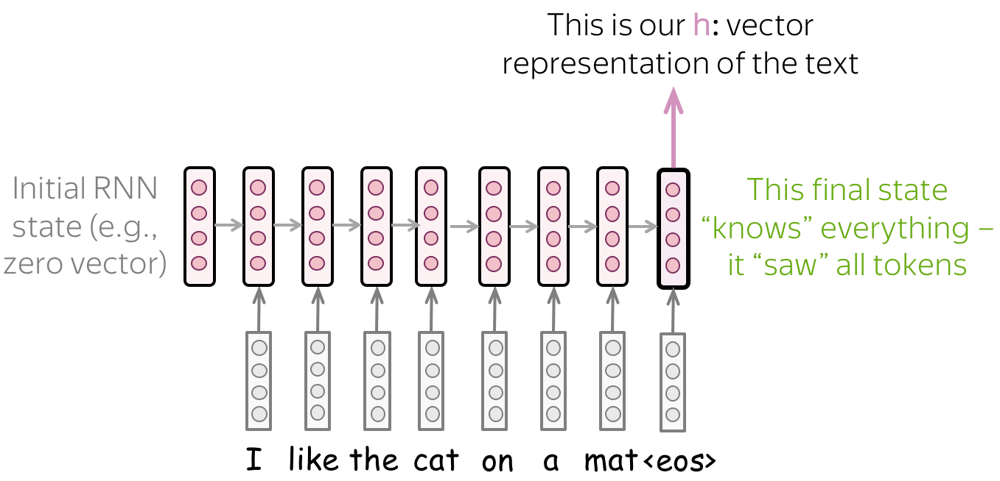
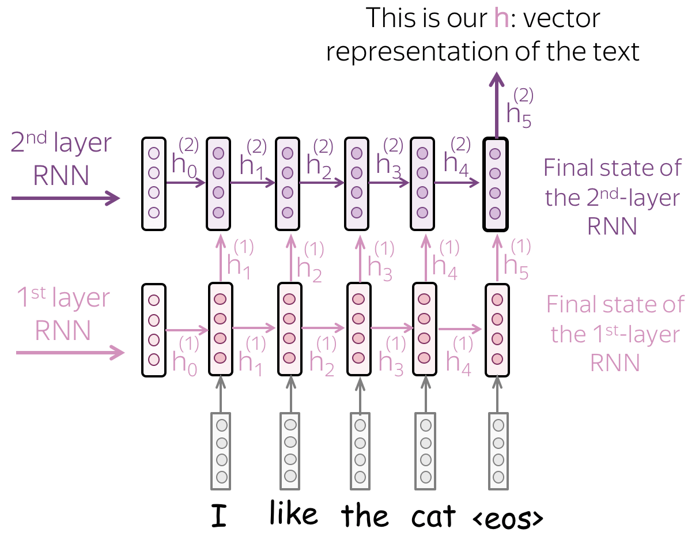
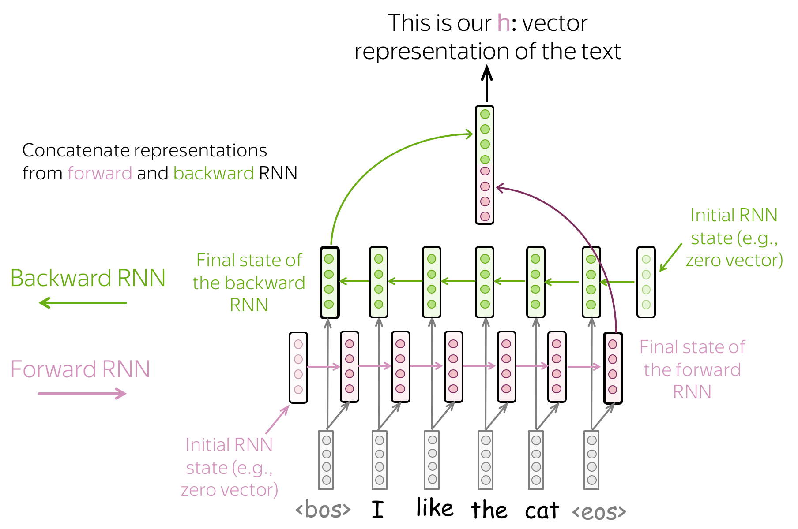

8.2 RNNs for Text Classification
Use the last state, or a bidirectional read, as the document vector.
These notes walk through the lecture slides. The original deck is unchanged; use (slides) on the course hub if you want that PDF.
1. Read the text, take a state
An RNN (note 8.1) produces a state after every token. For document classification you need one vector per document.
The simplest rule: use the last state. Only has seen every token (in a left-to-right net). Feed to a dense layer and a softmax.

That is a one-layer unidirectional RNN classifier. It is the diagram to start from. Everything else this note adds is a fix for what that last state forgets.
Sources: Practical Natural Language Processing, Natural Language Processing in Action, Voita.
2. Stack layers
One layer tends to pick up local regularities (short phrases). A second layer reads the first layer’s states as its input sequence. The hope: higher layers see topic and long-range tone.

States of layer become the sequence for layer . You still take the last state of the top layer (or pool the top sequence) as the document vector.
Two or three layers is the usual range. More layers without residual connections are hard to train and easy to overfit on a course-sized data set.
3. Bidirectional: both ends of the sentence
The last forward state remembers the end of the text better than the start. Even LSTMs drop early tokens on a long review. That is a problem if the sentiment word was in sentence one.
A backward RNN reads right to left. Its last state (the leftmost token, in time) remembers the beginning. Concatenate (or add) the two finals. One vector saw the tail; the other saw the head.

| Variant | Document vector | What it fixes |
|---|---|---|
| Last state | Simplest; forgets the start | |
| Mean / max over | pool all steps | Less dependence on the last token |
| Stacked | last (or pooled) top state | Deeper features |
| Bidirectional | Start and end both represented |
“Or something else—it’s your choice” is the lecture line. Concatenate is the default in Keras (Bidirectional wraps the cell and concatenates).
4. How to choose, applied
- Short tweets, lots of data: last-state LSTM or the multi-kernel CNN from note 7.3. Try both.
- Long reviews, cue at the front: bidirectional. Unidirectional last-state will look worse than it “should.”
- Tiny labeled set: TF–IDF + linear SVM (note 6.2) still first.
Evaluation does not change. Use F1 and a proper split. An RNN can overfit a small train set while the SVM does not.
Do not leak: tokenize and pad after the split; the vocabulary and any pretrained embeddings are allowed to come from unlabeled text, not from test labels.
5. What you should be able to draw
Three boxes:
- embeddings in
- a loop (one layer, stacked, or bidirectional)
- a vector → dense → classes
If you can mark which state becomes that vector, you have this week.
Keras names. LSTM(128) then a Dense is last-state classification (return_sequences=False). return_sequences=True plus another LSTM is stacking. Bidirectional(LSTM(128)) concatenates the two finals. Read the return_sequences flag before you debug a “wrong shape” error—most lab failures are that flag, not the math.
6. Pad, then mask
Batches need a common length. Padding tokens at the end should not update the state. Set a mask on the pad id so freezes on pads. If you forget the mask, “last state” is a pad state, and the classifier reads junk.
7. Practice
-
Why is a bad document vector in a forward-only RNN?
-
A 2,000-word review opens with “worst meal of my life” and then narrates the evening. Which architecture in the table is most likely to keep that phrase, and why?
-
You concatenate a forward final state of size 128 and a backward final state of size 128. What width does the classifier head see?